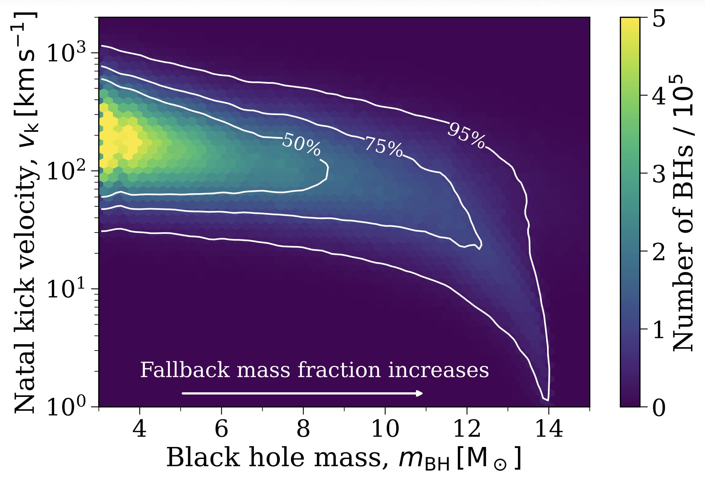

Charting the Galactic Underworld
The kinematics, rates, and demographics of Milky Way black holes
Wagg et al. 2026
A brief overview
Welcome! You've found the spot for exploring some of the results from our paper charting the "Galactic Underworld" of black holes (BHs) scattered throughout the Milky Way.
What did we do? We used cogsworth to simulate the entire population of Milky Way black holes, self-consistently accounting for their binary evolution and their trajectories through the Galactic potential. We repeated the simulation for ~30 variations of the binary physics, supernova physics, and Galactic potential.
What did we find? For our fiducial model, we predict that ~$1.7\times 10^8$ BHs have formed in the Milky Way, the vast majority of which are now isolated and ~3% have escaped the Galaxy. Most of the ~$10^7$ BHs in binaries have another BH or a white dwarf companion, but ~$10^5$ retain a luminous stellar companion. BHs are distributed more diffusely than visible stars, with a scale height around ~2.5x larger. BH masses correlate with present-day location: the most massive BHs are preferentially close to the Galactic plane. This correlation is especially strong for BH-star binaries, which separate into tight, low-mass post-common-envelope systems and wide, high-mass non-interacting ones. The BH mass distribution and kinematics are highly sensitive to the remnant mass prescription and natal kick model, so observations could constrain explodability criteria and BH kicks. Accounting for the time-evolution of the Galactic potential more than doubles the escape fraction and increases the bound population's scale height by ~20%, whilst neglecting binary interactions overestimates it by 30%.
Why is this important? With upcoming data from Roman, Gaia DR4, and spectroscopic surveys, we will soon have an unprecedented dataset of Milky Way black holes to constrain their formation and evolution in a complementary manner to gravitational-wave observations. Our work builds a foundation for interpreting these observations and connecting them to the underlying physics of stellar evolution, supernovae, and binary interactions.
How can I use this page? This page contains three different interactive figures that allow you to explore the results of our simulation in more detail. You can (1) explore the mass distribution of BHs, (2) examine how they are distributed in the Galaxy, and (3) consider some summary statistics for our 30 different model variations.
The Milky Way black hole mass distribution
Total or stacked?
Include Milky Way escapees?
Normalisation
$y$-axis scale
Model variation
Understanding the fiducial model
Let's first consider the fiducial model and explore some of the trends that we see in the mass distribution. The controls to the right of the plot should help you with answering these questions. And for more details on any of the answers you should take a look at Section 3 of the paper.
The mass distribution is driven by a combination of the initial mass function (IMF) and the remnant mass prescription. The peak at 3 M$_\odot$ is peak lower-mass stars are more common in the IMF, and the minimum BH mass in our simulation is 3 M$_\odot$. The remnant mass prescription maps carbon-oxygen core masses to BH masses.
Although every black hole is born in a binary in our simulations, these pairings can often end in disaster for the binary. We have three categories in the plot:
Isolated (disruption) — the supernova natal kick disrupted the binary, ejecting the BH. This is the most common outcome.
Isolated (merger) — the two stars merged before either reached core collapse, leaving a single object that later formed a BH.
Binary at present day — the BH is still bound to a companion (another compact object or a star).
So the reason that 91% of BHs are isolated is a combination of two things: supernova kicks often disrupt a binary, and many binaries merge before there's even a chance to have a disruption.
Massive black holes get weaker kicks! In the fiducial model we scale natal kicks by the fraction of ejecta that falls back onto the collapsing core following Fryer+2012. High-mass BHs have more fallback, so their kicks are weak and they rarely disrupt their binaries. You can see the scaling between BH mass and natal kicks in the plot below that's from the paper.

You can drag the interactive histogram to zoom in on the area above 30 M$_\odot$ and see how much more prevalent BHs in binaries become.
The further from the plane you look, the lower mass the BHs are on average. This trend is also driven by the mass-dependent natal kicks, which lead to low-mass BHs being kicked far from the plane, and high-mass BHs retaining similar orbits to their formation.
You can test this out with the slider bar, move the left switch to increasingly higher $|z|$ values to see how the mass distribution shifts!
Only a small fraction (~3% in the fiducial model) of BHs manage to escape the Milky Way's Galactic potential. They tend to be very low-mass BHs, since the natal kick required to escape must be high, which disfavours the BH having any sizeable fallback fraction.
You can try this out by toggling between the "Bound to MW" or "Escaped" BH populations and seeing how the $y$-axis scale and mass distribution shift.
Exploring the model variations
Now let's leverage the advantage of population synthesis and consider how the results are sensitive to a range of variations. You can use the ~30 buttons below the plot to switch between different models. The colours correspond to variations in the same category.
When BH natal kicks are assumed to follow the same distribution as neutron stars (i.e. no fallback scaling), the rate of BHs in binaries plummets. Conversely, if you assume that BHs do not receive natal kicks, the rate of BHs in binaries increases dramatically.
These changes are driven simply because a stronger natal kick is more likely to unbind a binary. You can learn more about this on another of my interactive pages
Yes! In the fiducial model, the further that you are from the plane, the lower the average mass of BHs. However, when you remove fallback scaling from BH natal kicks, you also remove the mass dependence, and so the distribution doesn't really change shape as you move further from the plane.
On the other hand, if you disable BH natal kicks, then the mass-dependent shift in the distribution also vanishes. However, there are also many fewer BHs at large heights because none of them receive sufficient kicks to reach those heights.
Overall, this means that if observations find a correlation between BH mass and distance from the plane, we may be able to constrain how much BH natal kick models.
Extremely!! Switching between the fiducial model and the other red buttons, you'll see that the shape of the distribution changes significantly, in terms of average masses, extra features, and the total number of BHs itself. These prescriptions make strong predictions for the expected BH mass distribution.
With the upcoming datasets of BHs (e.g. from Roman or Gaia), we will hopefully be able to rule out some of these models with the most extreme predictions. For example, the Maltsev prescription predicts that almost no BHs in the Milky Way have masses between 10 and 18 solar masses.
Our model for a time-evolving potential predicts that 2.5x more BHs will escape the Milky Way. Moreover, those BHs are slightly more massive on average.
The model we implement accounts for the expected mass growth of the Milky Way and as such has a shallower Galactic potential at early times. This weaker potential allows BHs to more easily escape early in the Galaxy's history.
Most changes to the initial distributions have only a very small effect on the overall shape of the total distribution. You may note that the relative rate of different channels varies with some choices (for example, making initial orbital periods tighter leads to a larger fraction of BHs from mergers), but the total remains fairly consistent.
The rates are mostly unchanged, except for the variation that changes the stellar initial mass function (IMF). As one may expect, a top-heavy IMF produces more massive stars, and thus more BHs.
The BH mass distribution is robust to fairly large variations in binary mass transfer physics! The relative rates of each channel are also fairly steady, except for the variations in which we force case B mass transfer to all be stable or unstable, which significantly changes the merger rates.
Black hole distance from the Galactic plane
This figure shows the normalised cumulative distribution function (CDF) of the distance of black holes from the Galactic plane, $|z|$. You can see how the scale height of BHs varies with different model variations (and also by channel) using the buttons. Note that this plot only shows BHs that are bound to the Milky Way, so the escaped BHs are not included here.
Total or split by channel?
Model variation
Check out Section 4 of the paper to learn more about the sensitivity of the scale height of black holes to the model variations - and how this can be used to constrain the physics of black hole formation and evolution!
Summary statistics across all model variations
Each panel shows one summary statistic for every model, grouped by the type of variation, with a dashed line marking the fiducial value. Hover any point to read its value. Choose which panels to show below.
Still craving more science?
Has this page piqued your curiosity about Milky Way BHs? Well, oh boy do I have a paper for you 🙃 Use the button below to go and read the full paper in detail!
Read the paper